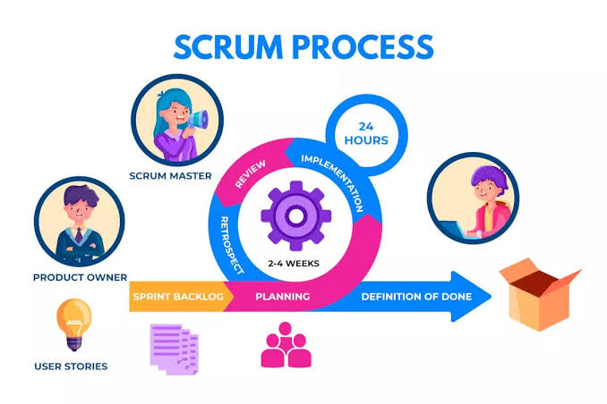

Introducción a Scrum
En un mundo caracterizado por el cambio constante y la necesidad de respuestas rápidas, las organizaciones deben adaptarse ágilmente para seguir siendo competitivas. Esto es especialmente cierto en el ámbito del desarrollo de software, donde los requerimientos del cliente y del mercado cambian constantemente. Ante esta realidad, las metodologías ágiles han surgido como una solución innovadora y eficaz para gestionar proyectos de forma flexible. Entre ellas, Scrum se ha convertido en el marco de trabajo ágil más reconocido y utilizado a nivel mundial.
Scrum no es una metodología en el sentido estricto, sino un marco de trabajo que permite a los equipos resolver problemas complejos adaptativos, al mismo tiempo que entrega productos de la más alta calidad de forma productiva y creativa. Su popularidad se debe a su simplicidad, su enfoque iterativo e incremental, y su capacidad de fomentar la colaboración entre equipos multidisciplinarios.
Este trabajo tiene como propósito brindar una visión profunda e integral de Scrum, explorando su historia, sus fundamentos teóricos, sus roles, eventos, artefactos, sus diferencias con otras metodologías, aplicaciones prácticas y su impacto en diversas industrias. Al final del trabajo, se espera que el lector no solo entienda qué es Scrum, sino también cómo puede aplicarse de manera eficaz en proyectos reales.
